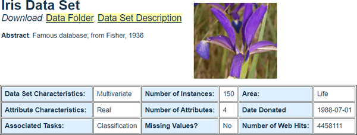
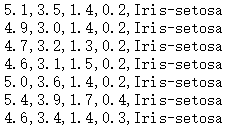
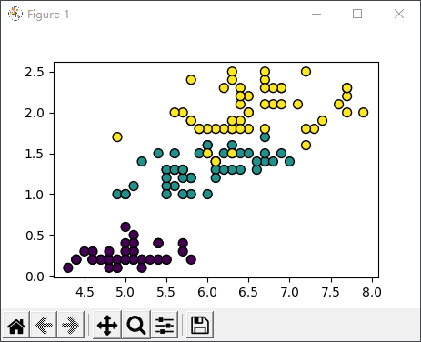

Python Sklearn库SVM算法应用
SVM 是一种有监督学习分类算法，输入值为样本特征值向量和其对应的类别标签，输出具有预测分类功能的模型，当给该模型喂入特征值时，该模型可以它对应的类别标签，从而实现分类。
支持向量机算法被包含在 sklearn.svm 模块中，该模块提供了 7 个常用类，这些不同的类分别应用了不同的核函数，因此它们可以解决不同的问题，比如分类问题、回归问题以及无监督学习中的异常点检测等。下表对它们做了简单的介绍：
SVM 主要用于解决二分类的问题，上述表格中最常使用的是 SVC 类。下面对使用该算法的步骤进行总结：
数据集的中每一行都是一个鸢尾花的观察结果，前四个数据代表鸢尾花的生物属性，比如花萼长度、宽度以及花瓣的长度、宽度，最后一项表示鸢尾花的类别，共三类，分别是山鸢尾（0表示）、色鸢尾（1表示）、维吉尼亚鸢尾（2表示），我们的任务就是对它们进行正确分类，数据集的部分数据展示如下：
下面使用支持向量机（SVM）算法对鸢尾花数据集进行分类，代码如下所示：
支持向量机算法在分类问题中有着非常出色的表现，它的特点是够解决非线性问题，并且训练模型的时候不必依赖于全部数据，主要使用处于分类边缘的样本点，因此它也适用解决小样本群体的分类问题，并且泛化能力较强。
当然，SVM 也有一些不足之处，比如核函数的寻找难度较大，并且最原始的 SVM 算法只适用于二分类问题。后经过不断的拓展、延伸，目前的 SVM 算法可以解决多分类问题，同时能够解决文本分类问题。
Sklearn库SVM算法
下面我看一下 Python 的 Scikit -Learn（简称 Sklearn） 库是如何实现 SVM 算法的。支持向量机算法被包含在 sklearn.svm 模块中，该模块提供了 7 个常用类，这些不同的类分别应用了不同的核函数，因此它们可以解决不同的问题，比如分类问题、回归问题以及无监督学习中的异常点检测等。下表对它们做了简单的介绍：
| SVM算法类别 | 描述 |
|---|---|
| LinearSVC类 | 基于线性核函数的支持向量机分类算法 |
| LinearSVR类 | 基于线性核函数的支持向量机回归算法 |
| SVC类 |
可选择多种核函数的支持向量机分类算法，通过“kernel”参数可以传入 linear：选择线性函数； polynomial：选择多项式函数； rbf：选择径向基函数； sigmoid：选择 Logistics 函数作为核函数； precomputed：使用预设核值矩阵， SVC 类默认以径向基函数作为核函数。 |
| SVR类 | 可选择多种核函数的支持向量机回归算法 |
| NuSVC类 | 与 SVC 类非常相似，但可通过参数“nu”设置支持向量的数量。 |
| NuSVR类 | 与SVR类非常相似，但可通过参数“nu”设置支持向量的数量。 |
| OneClassSVM类 | 用支持向量机算法解决无监督学习的异常点检测问题 |
SVM 主要用于解决二分类的问题，上述表格中最常使用的是 SVC 类。下面对使用该算法的步骤进行总结：
- 读取数据，将原始数据转化为 SVM 算法所能识别的数据格式；
- 将数据标准化，防止样本中不同特征数值大小相差较大影响分类器性能；
- 选择核函数，在不清楚何种核函数最佳时，推荐使用“rbf”（径向基核函数）
- 利用交叉验证网格搜索寻找最优参数；（交叉验证的目的是防止过拟合，利用网格搜索可以在指定的范围内寻找最优参数）
- 使用最优参数来训练模型；
- 测试得到的分类模型。
SVM算法应用
下面使用 SVM 算法对鸢尾花数据集进行分类处理（若想下载鸢尾花数据集可从UCI官方下载）如图所示：

图1：鸢尾花数据集
图1：鸢尾花数据集
数据集的中每一行都是一个鸢尾花的观察结果，前四个数据代表鸢尾花的生物属性，比如花萼长度、宽度以及花瓣的长度、宽度，最后一项表示鸢尾花的类别，共三类，分别是山鸢尾（0表示）、色鸢尾（1表示）、维吉尼亚鸢尾（2表示），我们的任务就是对它们进行正确分类，数据集的部分数据展示如下：

图2：鸢尾花数据集
图2：鸢尾花数据集
下面使用支持向量机（SVM）算法对鸢尾花数据集进行分类，代码如下所示：
from sklearn.datasets import load_iris # 导入鸢尾花数据集 from sklearn.svm import SVC #使用支持向量机算法 import matplotlib.pyplot as plt # 加载鸢尾花数据集，返回特征值 X 以及标签 y X,y = load_iris(return_X_y=True) # 使用SVM.SVC分类算法搭建预测模型，并以径向基函数做为核函数的实现高维映射 clf = SVC(kernel='rbf') # 训练模型,使用fit喂入数据X,y，即特征值和标签 clf.fit(X, y) # 预测分类 result=clf.predict(X) print(result) # 对模型进行评分 score=clf.score(X,y) print(score) plt.figure() # 分割图1行1列第一个图 plt.subplot(111) # 选择X特征值中的第一列特征值和第三列特征值进行绘图 plt.scatter(X[:,0],X[:,3],c =y.reshape((-1)),edgecolor='k',s=50) plt.show()输出结果如下：
# 类别预测结果 [0 0 0 0 0 0 0 0 0 0 0 0 0 0 0 0 0 0 0 0 0 0 0 0 0 0 0 0 0 0 0 0 0 0 0 0 0 0 0 0 0 0 0 0 0 0 0 0 0 0 1 1 1 1 1 1 1 1 1 1 1 1 1 1 1 1 1 1 1 1 1 1 1 1 1 1 1 2 1 1 1 1 1 2 1 1 1 1 1 1 1 1 1 1 1 1 1 1 1 1 2 2 2 2 2 2 1 2 2 2 2 2 2 2 2 2 2 2 2 2 2 2 2 2 2 2 2 2 2 2 2 2 2 2 2 2 2 2 1 2 2 2 2 2 2 2 2 2 2 2] # 模型得分 0.9733333333333334对分类结果进行可视化展示：

图3：数据可视化
图3：数据可视化
支持向量机算法在分类问题中有着非常出色的表现，它的特点是够解决非线性问题，并且训练模型的时候不必依赖于全部数据，主要使用处于分类边缘的样本点，因此它也适用解决小样本群体的分类问题，并且泛化能力较强。
当然，SVM 也有一些不足之处，比如核函数的寻找难度较大，并且最原始的 SVM 算法只适用于二分类问题。后经过不断的拓展、延伸，目前的 SVM 算法可以解决多分类问题，同时能够解决文本分类问题。
关注公众号「站长严长生」，在手机上阅读所有教程，随时随地都能学习。内含一款搜索神器，免费下载全网书籍和视频。

微信扫码关注公众号